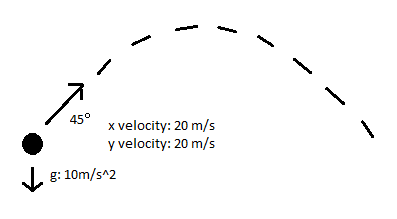

Sandbox Language
Joshua Itwaru (jni2102), Mauricio Castaneda (mc3683), Tony Ling (tl2573),
Olivia Byer (okb2102), Dina Lamdany (dtl2117)
September 25, 2013
Motivation
In most object oriented languages, the programmer is able to define an object and then use functions to create behaviors for that object. By applying functions to objects, a programmer can cause certain behaviors and actions. In most existing languages, the pattern of behavior must be explicitly defined at all times for each specific type of object. There are situations, however where all objects of all types are meant to reliably and consistently act according to certain rules. Our language was created for those situations. In Sandbox, all objects conform to the same set of rules, which allows for simulations according to specific patterns, such as simulations of the effects of the laws of physics. Sandbox allows a programmer to write programs that model a physical world that they define.
Language Description
Sandbox is designed so that a programmer can create a universe with its own set of rules and properties, and define inherent properties that objects of the system have. They set the rules that these properties have to obey, such as a set of equations that define how a physical system is to be measured. The "rules" can be thought of as a general object prototype; you state which properties all objects will be created with (and can pre-initialized those properties with values as well).
The paradigm of Sandbox is the concept of advancing time and querying for information at that point in time, like playing a movie, pausing it, assessing the physical state of the movie, and then resuming.
Syntax:
1. Comments:
All comments start with an @ symbol and ends at the next @ symbol.
All comments are multi-line capable and there is no alternative syntax for single line comments.
2. Whitespace:
Sandbox is whitespace-sensitive and whitespace is used as token separators. Newline is used as statement terminator. The body of a function should be indented with a tab for each new statement.
3. Rules:
Definitions for rules must start after the first Rule: and end before the next Endrule. There is only one rules section in any program, and cannot be nested.
Property definition: Inherent_property : object_type default_value : object_alias
Inherent properties are capitalized, while object types are lowercase. Aliases can be either capitalized or not.
Rules definition: Inherent_property = expression
Rules can only be defined for a property if the definition for that property already exists. Expressions can contain both primitives and/or previously defined properties. Any operators or looping can be used in the rules.
Example of a Rules definition:
Rules
Mass: int @define the type of Mass as an int@
Velocity: (int 10, int 10, int 10) : (x,y,z) @default values of 10 for int specified@
Gravity: (0, -9.81, 0) @initialize Gravity to be a vector with a value@
Forces: [Gravity] @initialize Forces to contain the Gravity vector by default@
Acceleration : (int, int, int): (x,y,z)
Acceleration = Force/Mass @rule definition for acceleration can include other
properties@
EndRule
4. Declarations:
General: type identifier = type_value
Vector: vector identifier = (value1, value2, value3) = (name1,name2,name3)
Vectors must always contain 3 values of type int or float. Giving names to each part of the vector is optional. They can be accessed via identifier.name1, etc. The three values can also be accessed by identifier(0), identifier(1) and identifier(2).
vector myVector = (1, 1, 0)
Array: int[] myarray = []
Arrays can contain any type of value, but must contain all values of the same type. The size of the array need not be declared when it is created.
Object: object identifier = ( object_values )
Eg: object dog = object() or
object dog = object(mass=5)
The type value is optional. If no type value is specified, the object’s default values are given by the rule definitions, or set to null if nothing is defined.
Functions: func identifier (parameters) return_type
body
The keyword return is used to return a value from the function. Functions need not return a value.
Eg:
func mult2(vector v) vector:
return 2*v
5. Looping
While loop:
while CONDITION:
code
For loop:
for int = 0, i < n, i++:
code
Sample Program
Imagine we are presented with the following situation:
We have an object that has velocity, position, mass, acceleration and forces acting upon it.
These situations can be modeled using this programming language, and the state of the “objects” involved in the frame of reference can be determined for any given time.
Specifically, let us consider the following situation that is described in the following image:
In this situation we have an object that has an initial speed for the x and y axes of 20 m/s. This object has an initial position at (x,y) = (0,0).
Additionally, gravity is acting on the object.
Imagine we want to determine the position of the object at time t = 10 seconds.
The following code will solve this problem:
@We first define the properties our objects will have@
Rule:
Position: (float, float, float) : (x,y,z)
Velocity: (float, float, float) : (x,y,z)
Acceleration: (float, float, float) : (x,y,z)
@Rules for the properties that are updated@
Position = Position + Velocity * Time + (½) Acceleration * Time^2
Velocity = Velocity + Acceleration * Time
EndRule
object ball = object();
ball.Position = (0,0,0)
ball.Velocity = (20,20,0)
ball.Acceleration = (0,-10,0)
Time.progress(4)
print(ball.position)
@Output should be: (80,0,0) @
Types
int
float
vector: immutable, 3 floats (float, float, float)
array: We allow dynamic arrays, so can do += on an array to add an element to the end of an array
object: Has properties defined as in the rules. Every object has the same set of properties. Their values can be set on an individual basis, by calling objectname.propertyname = blah, or default values can be set when the property is defined.
Time: Built-in type that gives a reference to all objects in the program. See below
string
Time
A major concept in our language is the idea of time. In any program exists a primitive called Time, which is immutable and is automatically created when a program runs. Time exists in the universe of a program similar to the way it exists in our world, and all objects in a program move forward when time moves forward. It can be called as “Time.progress(number)”, where the number can be positive or negative to denote forward or backwards progression. When time moves, every value in existence is saved, and then new values for those are calculated according to the rules of the universe. All properties of all objects are then updated. The user can then query for system information, via a call to getSystemState, which produces results generated from all of the physical equations that the programmer defined in functions.
Operators:
=, +, -, *, *=, -=, +=, /=, /, :, ==, .
++ increments an integer or a float by 1, -- decrements
Within the rules:
= Rule
: Define